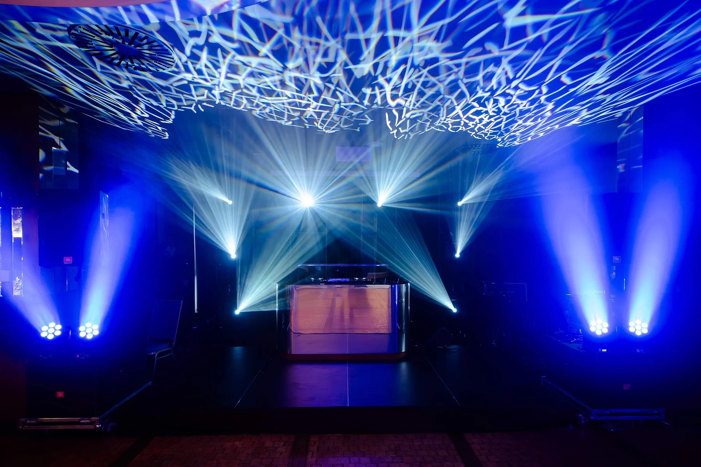

Własne zaplecze techniczne
Nie stosujemy rozwiązań prowizorycznych, pracujemy wyłącznie na sprawdzonym sprzęcie renomowanych marek. Nieustannie inwestujemy w rozwój zaplecza technicznego, by oferować naszym klientom najwyższy poziom usług przy tworzeniu wyjątkowych wydarzeń. Nasza firma właśnie poszerzyła swoje zaplecze techniczne o profesjonalne nagłośnienia i oświetlenia.
